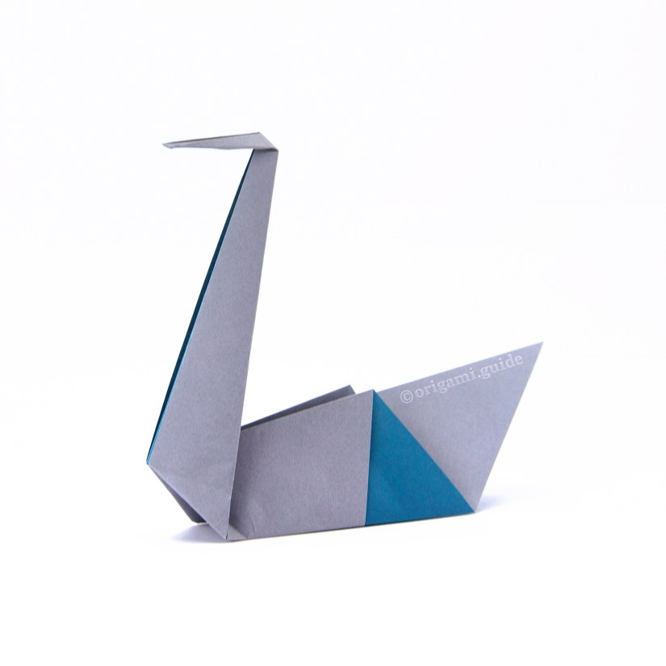
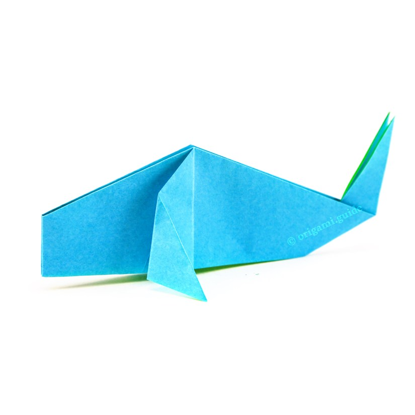

Origami instructions and diagrams
EASY WAY TO LEARN ORIGAMI!
Origami instructions and diagrams
Before beginning , click on 'know more' to know the importance of origami
Know moreTo learn any origami from below , click on their images!
Origami camel

Origami chameleon

Origami cicada

Origami Pigeon

Origami Panda

Origami Teddy Bear

Origami Swan
Origami Whale
HAVE A GREAT ORIGAMI LEARNING :)
Learn more about our platform